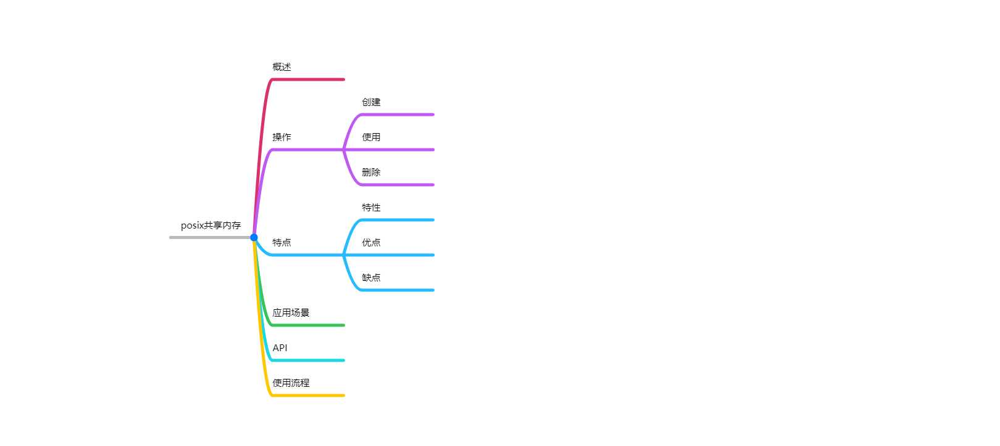

<!DOCTYPE HTML>
<html lang="zh-CN">
<head><meta name="generator" content="Hexo 3.8.0">
    <!--Setting-->
    <meta charset="UTF-8">
    <meta name="viewport" content="width=device-width, user-scalable=no, initial-scale=1.0, maximum-scale=1.0, minimum-scale=1.0">
    <meta http-equiv="X-UA-Compatible" content="IE=Edge,chrome=1">
    <meta http-equiv="Cache-Control" content="no-siteapp">
    <meta http-equiv="Cache-Control" content="no-transform">
    <meta name="renderer" content="webkit|ie-comp|ie-stand">
    <meta name="apple-mobile-web-app-capable" content="我的博客 - blog">
    <meta name="apple-mobile-web-app-status-bar-style" content="black">
    <meta name="format-detection" content="telephone=no,email=no,adress=no">
    <meta name="browsermode" content="application">
    <meta name="screen-orientation" content="portrait">
    <link rel="dns-prefetch" href="https://lives.xtcgch.ink">
    <!--SEO-->

<meta name="description" content="脑容量不够，笔记来凑">


<meta name="robots" content="all">
<meta name="google" content="all">
<meta name="googlebot" content="all">
<meta name="verify" content="all">
    <!--Title-->


<title>【原理】posix共享内存 | 我的博客 - blog</title>


    <link rel="alternate" href="/atom.xml" title="我的博客 - blog" type="application/atom+xml">


    <link rel="icon" href="https://blog.xtcgch.ink/img/background/海绵宝宝.ico">

    


<link rel="stylesheet" href="/css/bootstrap.min.css?rev=3.3.7">
<link rel="stylesheet" href="/css/font-awesome.min.css?rev=4.5.0">
<link rel="stylesheet" href="/css/style.css?rev=@@hash">


    


    

</head>

</html>
<!--[if lte IE 8]>
<style>
    html{ font-size: 1em }
</style>
<![endif]-->
<!--[if lte IE 9]>
<div style="ie">你使用的浏览器版本过低，为了你更好的阅读体验，请更新浏览器的版本或者使用其他现代浏览器，比如Chrome、Firefox、Safari等。</div>
<![endif]-->

<body>
    <header class="main-header" style="background-image:url(https://blog.xtcgch.ink/img/head-bg.jpg)">
    <div class="main-header-box">
        <a class="header-avatar" href="/" title="unistd68">
            
        </a>
        <div class="branding">
        	<!--<h2 class="text-hide">Snippet主题,从未如此简单有趣</h2>-->
            
                <h2> 脑容量不够，笔记来凑 </h2>
            
    	</div>
    </div>
</header>
    <nav class="main-navigation">
    <div class="container">
        <div class="row">
            <div class="col-sm-12">
                <div class="navbar-header"><span class="nav-toggle-button collapsed pull-right" data-toggle="collapse" data-target="#main-menu" id="mnav">
                    <span class="sr-only"></span>
                        <i class="fa fa-bars"></i>
                    </span>
                    <a class="navbar-brand" href="https://lives.xtcgch.ink">我的博客 - blog</a>
                </div>
                <div class="collapse navbar-collapse" id="main-menu">
                    <ul class="menu">
                        
                            <li role="presentation" class="text-center">
                                <a href="https://blog.xtcgch.ink/"><i class="fa "></i>主页</a>
                            </li>
                        
                            <li role="presentation" class="text-center">
                                <a href="https://blog.xtcgch.ink/categories/原理/"><i class="fa "></i>原理</a>
                            </li>
                        
                            <li role="presentation" class="text-center">
                                <a href="https://blog.xtcgch.ink/categories/代码/"><i class="fa "></i>代码</a>
                            </li>
                        
                            <li role="presentation" class="text-center">
                                <a href="https://blog.xtcgch.ink/categories/开源/"><i class="fa "></i>开源</a>
                            </li>
                        
                            <li role="presentation" class="text-center">
                                <a href="https://blog.xtcgch.ink/categories/面试/"><i class="fa "></i>面试</a>
                            </li>
                        
                            <li role="presentation" class="text-center">
                                <a href="https://blog.xtcgch.ink/categories/其他/"><i class="fa "></i>其他</a>
                            </li>
                        
                            <li role="presentation" class="text-center">
                                <a href="https://blog.xtcgch.ink/archives/"><i class="fa "></i>时间轴</a>
                            </li>
                        
                    </ul>
                </div>
            </div>
        </div>
    </div>
</nav>
    <section class="content-wrap">
        <div class="container">
            <div class="row">
                <main class="col-md-8 main-content m-post">
                    <p id="process"></p>
<article class="post">
    <div class="post-head">
        <h1 id="【原理】posix共享内存">
            
	            【原理】posix共享内存
            
        </h1>
        <div class="post-meta">
    
    
    <span class="categories-meta fa-wrap">
        <i class="fa fa-folder-open-o"></i>
        <a href="https://blog.xtcgch.ink/categories/原理">
            原理
        </a>
    </span>
    

    
    <span class="fa-wrap">
        <i class="fa fa-tags"></i>
        <span class="tags-meta">
            
                
                    <a href="https://blog.xtcgch.ink/tags/共享内存" title="共享内存">
                        共享内存
                    </a>
                
                    <a href="https://blog.xtcgch.ink/tags/POSIX" title="POSIX">
                        POSIX
                    </a>
                
            
        </span>
    </span>
    

    
        
        <span class="fa-wrap">
            <i class="fa fa-clock-o"></i>
            <span class="date-meta">2019/01/15</span>
        </span>
        
    
</div>

            
            
            <p class="fa fa-exclamation-triangle warning">
                本文于<strong>993</strong>天之前发表，文中内容可能已经过时。
            </p>
        
    </div>
    
    <div class="post-body post-content">
        <p><strong>摘要：</strong>posix共享内存是IPC的一种方式，相似地，还有System V共享内存，本文只讲posix标准下的共享内存知识。</p>
<a id="more"></a>
<hr>
<h2 id="脑图"><a href="#脑图" class="headerlink" title="脑图"></a>脑图</h2><p></p>
<hr>
<h2 id="1、概述"><a href="#1、概述" class="headerlink" title="1、概述"></a>1、概述</h2><h3 id="1-1-简介"><a href="#1-1-简介" class="headerlink" title="1.1 简介"></a>1.1 简介</h3><h3 id="1-2-特性"><a href="#1-2-特性" class="headerlink" title="1.2 特性"></a>1.2 特性</h3><h3 id="1-3-评价"><a href="#1-3-评价" class="headerlink" title="1.3 评价"></a>1.3 评价</h3><p>（1）优点</p>
<p>（2）缺点</p>
<p>（3）限制</p>
<hr>
<h2 id="2、操作"><a href="#2、操作" class="headerlink" title="2、操作"></a>2、操作</h2><h3 id="2-1-创建"><a href="#2-1-创建" class="headerlink" title="2.1 创建"></a>2.1 创建</h3><h3 id="2-2-删除"><a href="#2-2-删除" class="headerlink" title="2.2 删除"></a>2.2 删除</h3><h3 id="2-3-使用"><a href="#2-3-使用" class="headerlink" title="2.3 使用"></a>2.3 使用</h3><hr>
<h2 id="3、使用场景"><a href="#3、使用场景" class="headerlink" title="3、使用场景"></a>3、使用场景</h2><hr>
<h2 id="4、API"><a href="#4、API" class="headerlink" title="4、API"></a>4、API</h2><hr>
<h2 id="5、使用流程"><a href="#5、使用流程" class="headerlink" title="5、使用流程"></a>5、使用流程</h2><hr>
<h2 id="6、demo"><a href="#6、demo" class="headerlink" title="6、demo"></a>6、demo</h2><hr>
<h2 id="总结"><a href="#总结" class="headerlink" title="总结"></a>总结</h2>
    </div>
    
    <div class="post-footer">
        <div>
            
        </div>
        <div>
            
        </div>
    </div>
</article>

<div class="article-nav prev-next-wrap clearfix">
    
        <a href="/2019/01/15/posix信号量/" class="pre-post btn btn-default" title="【原理】posix信号量">
            <i class="fa fa-angle-left fa-fw"></i><span class="hidden-lg">上一篇</span>
            <span class="hidden-xs">【原理】posix信号量</span>
        </a>
    
    
        <a href="/2019/01/12/CPP常见错误汇总/" class="next-post btn btn-default" title="【代码】CPP常见错误汇总">
            <span class="hidden-lg">下一篇</span>
            <span class="hidden-xs">【代码】CPP常见错误汇总</span><i class="fa fa-angle-right fa-fw"></i>
        </a>
    
</div>


    <div id="comments">
        
    
    <div id="vcomments" class="valine"></div>
    <script src="//cdn1.lncld.net/static/js/3.0.4/av-min.js"></script>
<script src="/assets/valine.min.js"></script>

    <script>
        new Valine({
            av: AV,
            el: '#vcomments',
            appId: 'XWA5gq7VCJybw7YQhf5HG20r-gzGzoHsz',
            appKey: '8FW1WEwrysHXaUD1bhGn2Rp8',
            placeholder: '说点什么吧',
            notify: true,
            verify: false,
            avatar: 'https://blog.xtcgch.ink/img/comment-avatar.jpg',
            meta: 'nick,mail'.split(','),
            pageSize: '10',
            path: window.location.pathname,
            lang: 'zh-CN'.toLowerCase()
        })
    </script>


    </div>


                </main>
                
                    <aside id="article-toc" role="navigation" class="col-md-4">
    <div class="widget">
        <h3 class="title">文章目录</h3>
        
            <ol class="toc"><li class="toc-item toc-level-2"><a class="toc-link" href="#脑图"><span class="toc-text">脑图</span></a></li><li class="toc-item toc-level-2"><a class="toc-link" href="#1、概述"><span class="toc-text">1、概述</span></a><ol class="toc-child"><li class="toc-item toc-level-3"><a class="toc-link" href="#1-1-简介"><span class="toc-text">1.1 简介</span></a></li><li class="toc-item toc-level-3"><a class="toc-link" href="#1-2-特性"><span class="toc-text">1.2 特性</span></a></li><li class="toc-item toc-level-3"><a class="toc-link" href="#1-3-评价"><span class="toc-text">1.3 评价</span></a></li></ol></li><li class="toc-item toc-level-2"><a class="toc-link" href="#2、操作"><span class="toc-text">2、操作</span></a><ol class="toc-child"><li class="toc-item toc-level-3"><a class="toc-link" href="#2-1-创建"><span class="toc-text">2.1 创建</span></a></li><li class="toc-item toc-level-3"><a class="toc-link" href="#2-2-删除"><span class="toc-text">2.2 删除</span></a></li><li class="toc-item toc-level-3"><a class="toc-link" href="#2-3-使用"><span class="toc-text">2.3 使用</span></a></li></ol></li><li class="toc-item toc-level-2"><a class="toc-link" href="#3、使用场景"><span class="toc-text">3、使用场景</span></a></li><li class="toc-item toc-level-2"><a class="toc-link" href="#4、API"><span class="toc-text">4、API</span></a></li><li class="toc-item toc-level-2"><a class="toc-link" href="#5、使用流程"><span class="toc-text">5、使用流程</span></a></li><li class="toc-item toc-level-2"><a class="toc-link" href="#6、demo"><span class="toc-text">6、demo</span></a></li><li class="toc-item toc-level-2"><a class="toc-link" href="#总结"><span class="toc-text">总结</span></a></li></ol>
        
    </div>
</aside>

                
            </div>
        </div>
    </section>
    <footer class="main-footer">
    <div class="container">
        <div class="row">
        </div>
    </div>
</footer>

<a id="back-to-top" class="icon-btn hide">
	<i class="fa fa-chevron-up"></i>
</a>


    <div class="copyright">
    <div class="container">
        <div class="row">
            <div class="col-sm-12">
                <div class="busuanzi">
    
</div>

            </div>
            <div class="col-sm-12">
                <span>Copyright &copy; 2018
                </span> |
                <span>
                    Powered by <a href="//hexo.io" class="copyright-links" target="_blank" rel="nofollow">Hexo</a>
                </span> |
                <span>
                    Theme by <a href="//github.com/shenliyang/hexo-theme-snippet.git" class="copyright-links" target="_blank" rel="nofollow">Snippet</a>
                </span>
            </div>
        </div>
    </div>
</div>


<script src="/js/app.js?rev=@@hash"></script>

</body>
</html>